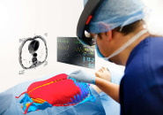

Augmented Reality technology (AR) offers innovative ways to visualize and manipulate 3D data of an object by superimposing computer-generated images into another object interactively. The ability to interact with digital and spatial information in real-time offers new opportunities to manipulate, visualize and process medical data with more ease and efficiency.
Partners
Sahloul Hospital of Sousse
The Sahloul hospital is a public health establishment and a Tunisian university hospital center located in Sousse.
The main activity of the Sahloul University Hospital is to provide care as well as to ensure prevention, education and research in the medical and health fields.
University of Sousse
The University of Sousse is a public academic organization that offers bachelor's, master's and doctorate training programs in four families of disciplines namely humanities, social sciences, engineering and technology and health sciences.
ISSAT Sousse
The Higher Institute of Applied Sciences and Technology of Sousse is a scientific institute under the University of Sousse (Tunisia)
It offers training in the fields of computing, electronics, energy and mechanics. The mission of the ISSAT is also to train computer engineers and multidisciplinary research Masters.
Augmented Reality Surgey!
During surgical procedures, surgeons face various challenges dealing with the computerized patient data...
Several techniques are used to visualize the operative areas such as fluoroscopy and ultrasound.
These techniques have several limitations.
As consequence, Augmented Reality could serve as a better alternative that can project three-dimensional models of the target organ into the surgeon’s perspective and field of view, in order to improve the accuracy and efficiency of the medical intervention.

AR-based approach with the integration of a tracking system could be developed to generate superimposed images of the human organ intraoperatively in real-time.
Surgeons will be able to visualize a computer-generated digital representation of the organ and interact with it accordingly.
This AR project introduce an ambitious alternative solution, to mitigate surgery issues and guide the surgeon to have improved diagnosis and decision making during constrained surgical operations by offering a wider and global visual representation of the organ.